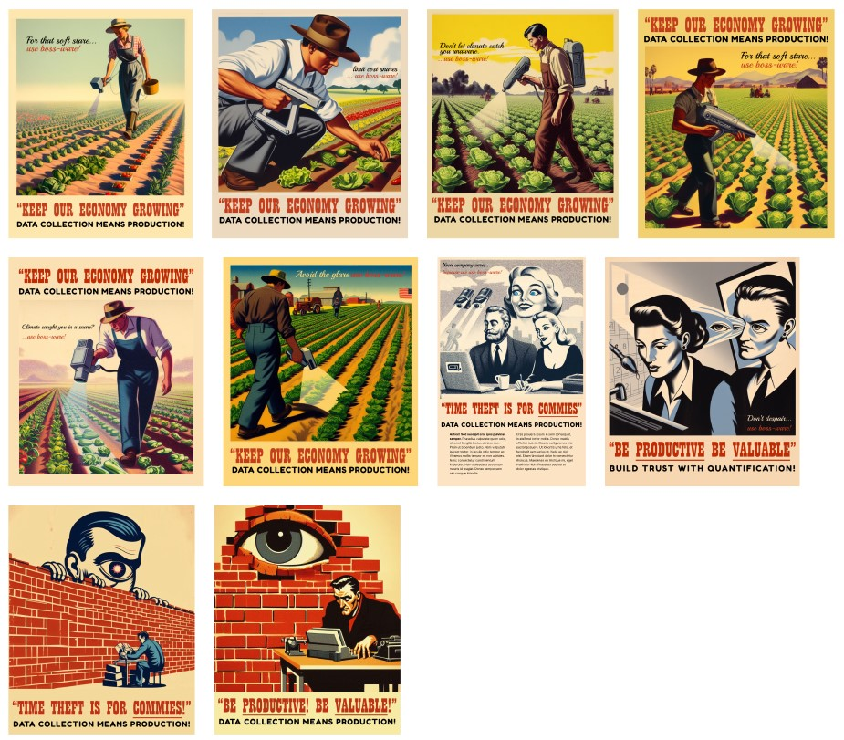

Research and Brainstorming
Before we could begin designing for our scenario, we first needed to have a clear understanding of the topic, issues, discussions, and hidden complexities related to Bossware and surveillance. In our first meeting, we discussed what we already knew about Bossware, our preconceived notions, and current thoughts about the topic. Greg had experience in a previous job with surveillance apps and was able to give personal insights and experiences. Throughout the discussion I took notes to reference later.
After our first brainstorm session, we then split various points into different categories such as Social, Political, Cultural, Material, Context, Who, Issues, Existing Projects, and our Team's Interest.
Concept
After collecting and organizing our ideas, we began ideating different worlds and scenarios around the ideas we identified. I used grey and dark-grey sticky notes.
My first concept was a world where everything is under surveillance. This includes details such as where someone is looking, how they're breathing, moving, their heartbeat, and more. If we lived in a world like this, what types of values would be embodied? How would social structure and economies work?
My second concept is a world contrary to the first, where everyone is trusted to work autonomously. In this world, what types of jobs would exist? How would companies be structured? How will the technologies of the world develop? Would there be any technologies less developed than our current reality?
The third world I thought of was one where people worked for enjoyment. How would passion driven careers shape the world? What types of surveillance would exist in this environment? What about the boring and mundane but essential jobs we don't often think about?
My final world was one that valued hyper-productivity. What is the meaning of work? How could people work as efficiently as possible? What does it mean to be productive? What would be the consequences or benefits of such a world?
After creating and worldbuilding some of the possible scenarios, we then began imagining the world from the perspective of someone living in it. For example, Greg's idea, "imagine your're a middle-aged farmer growing crops in the year 2092" (we progressed further with this concept). From this line of thought, we came up with a possible solution: "you can cross-reference weather patterns and climate anomalies with virtual scans of your seedlings ([using a] hand-held scanner)..."
Posters
Greg created the posters with AI and during the in-class critique, our classmates didn't immediately understand the idea. however, when they took time to read and ponder, they could begin to grasp our concept.
During the critiques I was also looking around the classroom and noticed microphones hanging from the ceiling and cameras pointing towards the front and rear of the classroom. I thought... why would they need these in the classroom? So as an adaptation of our posters, I thought that it would be interesting to somehow integrate the physical environment and have the posters interact with the surrounding space to better convey our message. Say, a poster of someone pointing towards a physical surveillance device. What type of discussions could be brought about with this?
Short Video
The second deliverable we were tasked with was creating a short video to further explore our speculative world. We chose to continue with the more retro-styled themes of the poster and reflect them in the video to tie them together.
During the class critique, some of our classmates noted that they felt a disconnect between the style of the video and themselves. As the video felt outdated, this gave the impression that surveillance was a problem of the past. On the other hand, our professor understood the thematical choices and felt that it was relatable. Perhaps this is due to the media that we were accustomed to growing up?
To remedy this, we sought to find ways to contextualize the video in the now. As a result, we ended up splitting the video into three parts: the start, the historical propaganda, and the current rebellion.
At the start, the video begins with the YouTube homepage to situate the video as one that would appear simply while browsing the internet.
The historical propaganda section is meant to present Bossware and surveillance in a positive light, as if brainwashing the viewer. We played into certain tropes and themes to make this more understandable. I wrote the script for this section using an acronym to make it easy to remember, Productivity, Results, Insight, Security, Management (P.R.I.S.M.). Greg used an AI voice cloner to copy the voice of an old radio or television commentator.
The rebellion section then brings out discourse about Bossware, and questions the benefits of such a system. It is situated in a more modern setting and is meant to blatantly highlight issues regarding these systems. For this part of the script, I modified a draft that Greg wrote and followed a more conversational style. I used WellSaidLabs to generate this part of the voiceover.
To polish off our deliverables, I thought about how we could tie in the poster and the video. While commuting back from class, I noticed a speed limit sign covered up by cardboard and thought... what if our poster was vandalized? Wouldn't this fit the rebellion theme?
As such, we also proposed a poster design that looks like someone splattered graffiti over, which would both catch passerby's attention and also help bring up possible discussions around the topic. For the video, I gave some suggestions on editing with video examples that I had seen before, and these edits were ultimately envisioned by my team mate.

Results
I really enjoyed this specualtive project! It was fun thinking and imagining possible futures and how the technologies of the past and today change the world. As part of imagining an alternate future, we were given the freedom to create a world that would embody different values, we chose to create an extreme alternative reality to highlight possible areas of conversation about our collective future with regards to the broad topic of mass surveillance.